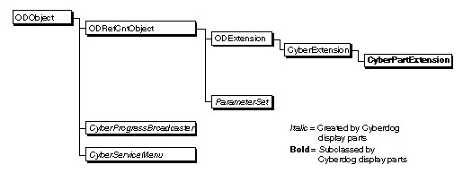
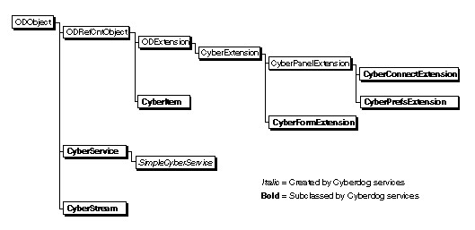
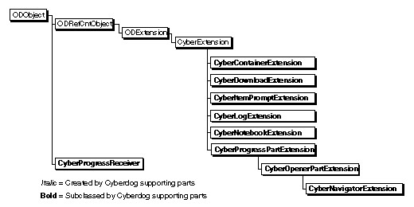

Legacy Document
Important: The information in this document is obsolete and should not be used for new development.
Important: The information in this document is obsolete and should not be used for new development.


Cyberdog Class Library
Cyberdog is a set of classes built on top of OpenDoc. Like OpenDoc, Cyberdog is an object-oriented library that is largely platform independent. As with OpenDoc, you can write a Cyberdog part editor in procedural code and use it within the OpenDoc and Cyberdog class structures. You can easily enhance existing OpenDoc parts to work with Cyberdog. Cyberdog is extensible, and many of its components are replaceable, allowing for innovation by developers at both the system and application levels.Cyberdog and OpenDoc are implemented as shared libraries consisting of a set of classes constructed using System Object Model (SOM), a specification for object binding at runtime. Because Cyberdog and OpenDoc both use SOM, Cyberdog parts and components that have been created with different compilers or in completely different programming languages can nevertheless communicate properly with each other. Furthermore, they can be independently revised and extended and still work together.
The interfaces to all of Cyberdog's classes are specified in the Interface Definition Language (IDL), a programming-language-neutral syntax for creating interfaces. IDL interfaces are typically compiled separately from implementation code, using a SOM compiler.
For more information on SOM and using the SOM compiler on the Mac OS platform, see OpenDoc Cookbook for the Mac OS and OpenDoc Programmer's Guide for the Mac OS. For a more detailed description of IDL and instructions on programming with SOM, see SOMObjects Developer Toolkit Users Guide and SOMObjects Developer Toolkit Programmers Reference Manual from IBM.
Class Hierarchy
Cyberdog classes create objects that cooperate in referencing, downloading, and displaying remotely located content. Because the Cyberdog class library builds on the OpenDoc class library, you must use both class libraries to create Cyberdog components.All Cyberdog classes are derived from the OpenDoc superclass
ODObject, itself a subclass ofsomObject, the fundamental SOM superclass. The Cyberdog classes can be divided into three groups according to their uses:
Two additional Cyberdog classes,
- classes that you use when you create a Cyberdog display part
- classes that you use when you create a Cyberdog service
- classes that you use when you create a custom Cyberdog supporting part, such as a log or notebook
CyberSessionandCyberExtension, are used more generally. An object of classCyberSessionrepresents a single Cyberdog process; theCyberSessioninterface provides access to a number of Cyberdog utilities. ClassCyberExtension, a subclass of classODExtension, is the abstract superclass for all Cyberdog-specific extensions.Classes for Cyberdog Display Parts
The classes shown in Figure 2-1 are classes you subclass or use to create a Cyberdog display part. The figure shows these categories of classes:
Figure 2-1 Classes for creating a Cyberdog display part
- Names in bold represent abstract superclasses that you are likely to subclass when creating a Cyberdog display part.
- Names in italics represent classes whose objects you may create when creating a Cyberdog display part.
- Names in plain text represent classes whose objects you call but typically never have to create; they are created for you by Cyberdog.

A Cyberdog display part is an OpenDoc part (an object of an
ODPartsubclass) with an extension subclassed from classCyberPartExtension. TheCyberPartExtensionobject provides the Cyberdog-specific public interface for a Cyberdog display part.The
CyberPartExtensionclass is an abstract superclass with 12 methods, all of which you can override. At a minimum, Cyberdog display part developers usually override theOpenCyberItemmethod in theirCyberPartExtensionsubclass.OpenCyberItemis called to notify the Cyberdog display part that it is being opened by a Cyberdog item, rather than in some other way, such as being restored from disk. Your implementation ofOpenCyberItemdepends on the desired behavior of your Cyberdog display part; a common behavior involves opening the display part and creating and opening a Cyberdog stream to download the content referenced by its Cyberdog item.
CyberProgressBroadcasteris an implemented class that a Cyberdog display part can instantiate directly to represent the progress of an asynchronous process, such as a download operation. If you display your display part embedded in a navigator, you can use the navigator and its associated progress receiver to display progress. However, if you want to implement your own progress part, you must subclass and implement theCyberProgressPartExtensionandCyberProgressReceiverclasses.In addition, if you want your display part to include the Cyberdog service-related menus in its menu bar, you must create and initialize an object of the fully implemented
CyberServiceMenuclass. When your display part handles a menu event, adjusts its menus, and acquires or loses the menu focus, it should call the appropriateCyberServiceMenumethods to allow the service-related menus to handle their menu commands, adjust menus, and show and hide menus.The
ParameterSetclass is a Cyberdog utility class. An object of classParameterSetdefines an arbitrary collection of objects. Parameter sets are general purpose objects; you can use them in any way you want. In Cyberdog, a parameter set is used during the opening of a Cyberdog item. For example, if a client wants a Cyberdog item to open embedded in a navigator, it can add, to the parameter set that is passed to the opening Cyberdog item, a pointer to the navigator.Classes for Cyberdog Services
The classes shown in Figure 2-2 are classes you subclass or use to create a Cyberdog service.Figure 2-2 Classes for creating a Cyberdog service

If you are adding a new service to Cyberdog, you will subclass the following abstract superclasses:
- The class
CyberServicerepresents a Cyberdog service. ACyberServiceobject acts as the representative object for the suite of objects that collectively implement a network protocol.CyberServiceis an abstract superclass with 12 methods, most of which you may override. The classSimpleCyberServiceis an implemented subclass ofCyberService.SimpleCyberServiceis a simple, resource-driven service that you can instantiate or subclass.- The class
CyberItemrepresents a Cyberdog item.CyberItemis subclassed by protocol; each subclass understands how to address information for that protocol.CyberItemhas 24 methods, most of which you must override when you subclassCyberItemto support a new protocol.- The class
CyberStreamrepresents a Cyberdog stream.CyberStreamis subclassed by protocol; each subclass understands how to download data for that protocol. If you add support for a new protocol and you intend to use a Cyberdog stream to download data, you must subclass theCyberStreamclass.CyberStreamhas 11 methods, most of which you must override.- The class
CyberConnectExtensionis a subclass of classCyberPanelExtension. A subclass ofCyberConnectExtensionrepresents an object you can use to create a part to use as a panel in the Connect To dialog box. Your custom panel should contain user interface elements that allow the user to specify the appropriate connection information for the new service.CyberConnectExtensionhas one method, which returns the Cyberdog item specified by the user; you must override this method.- The class
CyberPrefsExtensionis a subclass of classCyberPanelExtension. A subclass ofCyberPrefsExtensionrepresents an object you can use to create a part to use as a panel in the Preferences dialog box. Your custom panel should contain user interface elements that allow the user to specify meaningful preferences for the new service.CyberPrefsExtensionhas methods for saving and restoring preferences; you must override these methods.- The class
CyberFormExtension, when subclassed, represents an object you can use to extend a Cyberdog item so that it can submit an HTML form. If you intend to develop a service for accessing data using HTTP protocol, you must subclass theCyberFormExtensionclass.CyberFormExtensionhas five methods, all of which you must override.
Classes for Supporting Parts
Cyberdog provides a number of classes, shown in Figure 2-3, that you can subclass and implement to replace Cyberdog supporting parts, such as the log or the notebook, with your own custom parts.Figure 2-3 Classes for creating supporting parts

- To create a custom log part, you must subclass and implement the
CyberLogExtensionclass.- To create a custom notebook part, you must subclass and implement the
CyberNotebookExtensionclass.- To create a custom navigator part, you must subclass and implement the
CyberNavigatorExtensionclass.- The classes
CyberProgressPartExtensionandCyberProgressReceivercan be used together to implement a progress part that monitors and displays the progress of any asynchronous process. The Cyberdog navigator and opener parts are progress parts; you can use them to display progress. To create a custom progress part, you must subclass and implement bothCyberProgressPartExtensionandCyberProgressReceiver. An object of classCyberProgressBroadcasterbroadcasts progress information to a progress part's receiver. You can directly instantiateCyberProgressBroadcaster.- To create a custom opener part, you must subclass and implement the
CyberOpenerPartExtensionclass.- To create a custom download part, you must subclass and implement the
CyberDownloadExtensionclass.- To create a custom Connect To or Preferences dialog box, you must subclass and implement the
CyberContainerExtensionclass. To extend a Connect To dialog box to allow it to return the Cyberdog item entered by the user, you must also subclass and implement theCyberItemPromptExtensionclass.
- Note
- In addition to the extensions described above, the Cyberdog-supplied download part, opener part, and navigator part are also extended with a subclass of class
CyberPartExtension.